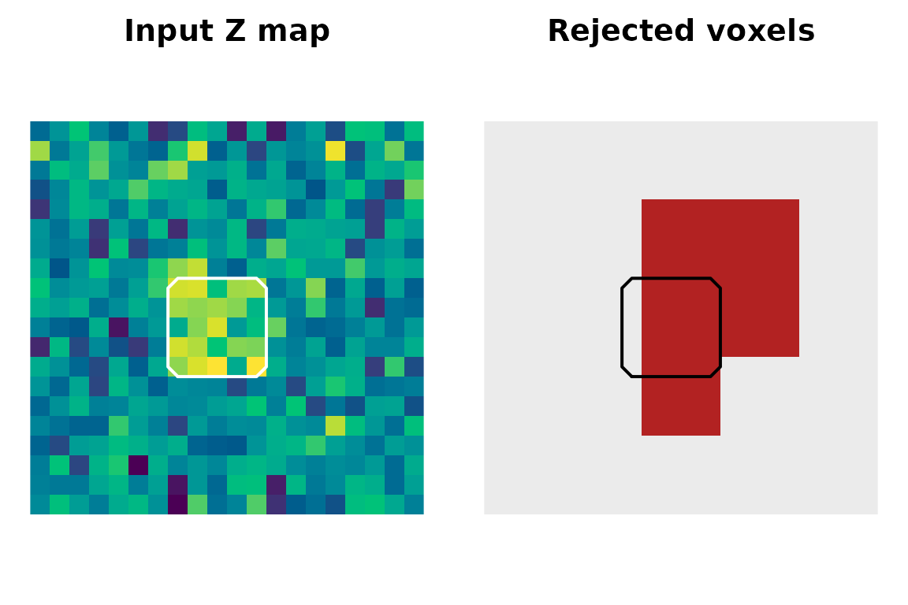

What problem are we solving?
In neuroimaging thresholding, you usually start with a statistic
image: one Z-equivalent value per voxel. A voxelwise maximum test is
easy to interpret, but it can miss spatially extended signals whose
evidence is spread across a region. neurothresh gives you
inference tools that keep the statistic map as the input, build a
matched null distribution, and return a standard
neurothresh_result with a threshold, corrected values, and
a rejection mask.
The canonical workflow is:
- create or load a statistic map,
- canonicalize it to Z values if needed,
- choose a null specification with
null_*(), - run an inference method with
stat_vol,mask, andnull_spec, - inspect the returned
neurothresh_result.
A first multiscale scan
Here is a small 3D example with a planted spatially extended signal. The Monte-Carlo null is intentionally tiny so the vignette builds quickly.
set.seed(123)
z_map <- array(rnorm(20 * 20 * 20), dim = c(20, 20, 20))
z_map[8:12, 8:12, 8:12] <- z_map[8:12, 8:12, 8:12] + 2
ns <- null_mc_fwhm(
template = z_map,
mask = is.finite(z_map),
smoothness = smoothness_fwhm(c(2, 2, 2)),
n_perm = 200,
seed = 123
)
fit <- octree_scan_fwer(
stat_vol = ns$stat_vol,
mask = ns$mask,
null_spec = ns,
alpha = 0.10,
tail = "pos"
)
fit
#> <neurothresh_result>
#> method : octree_scan_fwer
#> alpha : 0.1
#> tail : pos
#> threshold: 4.189
#> rejected : 577 / 8000 voxels (7.21%)
#> clusters : 12
#> n_perm : 200octree_scan_fwer() tests hierarchical spatial regions
and controls familywise error over the scanned family. The printed
result tells you the method, tail, threshold, and how many voxels are
rejected at the requested alpha level.

The first scan starts with a statistic image, then returns a rejection mask in the same voxel space. The white outline marks the planted signal cube.
What is the score doing?
At each region, LR-MFT aggregates evidence across a set of voxels rather than looking only at the single largest voxel. The lower-level scoring helpers are useful for understanding the idea.
set.seed(42)
z_vec <- rnorm(1000)
z_vec[400:450] <- z_vec[400:450] + 2.5
pi_vec <- rep(1, length(z_vec))
region_idx <- 400:450
u0 <- score_set_stabilized(region_idx, z_vec, pi_vec)
scores <- data.frame(
statistic = c("stabilized U0", "soft-max kappa=1", "soft-max kappa=2"),
value = c(
u0$U0,
score_set(region_idx, z_vec, pi_vec, kappa = 1),
score_set(region_idx, z_vec, pi_vec, kappa = 2)
)
)
scores
#> statistic value
#> 1 stabilized U0 17.147826
#> 2 soft-max kappa=1 6.799886
#> 3 soft-max kappa=2 10.397843The stabilized score accounts for region size. Increasing
kappa makes the soft-max score more responsive to the
strongest local peaks.
What if my map is not a Z map?
Use canonicalize() before inference. It returns a
Z-equivalent volume with the same shape as the input.
t_map <- z_map * sqrt(25 / pmax(25 - z_map^2, 1))
z_from_t <- canonicalize(t_map, stat_type = "t", df = 25)
range(as.numeric(z_from_t), finite = TRUE)
#> [1] -4.687127 6.471432canonicalize_stat() is available when you need the
richer object containing the Z map, mask, and per-tail p-values. Most
inference functions only need the Z-equivalent
stat_vol.
Choosing a null specification
The null_spec object is the shared resampling seam in
neurothresh. It bundles an observed statistic map, a mask,
and deterministic null draws.
If you have subject-level contrast images, prefer subject-level resampling:
ns <- null_one_sample(subject_maps, n_perm = 5000, seed = 1)
fit <- octree_scan_fwer(
stat_vol = ns$stat_vol,
mask = ns$mask,
null_spec = ns
)If you only have a final statistic map, use a model-based null and state the smoothness assumption explicitly:
ns <- null_mc_fwhm(
template = z_map,
mask = is.finite(z_map),
smoothness = smoothness_fwhm(8),
n_perm = 5000,
seed = 1
)
fit <- octree_scan_fwer(stat_vol = z_map, mask = ns$mask, null_spec = ns)How do other methods fit?
The same canonical inputs feed the comparison methods:
rft <- rft_peak_fwer(
stat_vol = z_map,
smoothness = smoothness_fwhm(8),
tail = "pos"
)
tfce <- tfce_fwer(
stat_vol = ns$stat_vol,
mask = ns$mask,
null_spec = ns,
tail = "pos"
)
fdr <- cluster_fdr(
stat_vol = z_map,
cluster_thresh = 3.0,
q = 0.05,
tail = "pos",
p_method = "rft",
smoothness = smoothness_fwhm(8)
)For distributed planned contrasts, see
vignette("scale-space-localized-energy"). For local
adaptive post-statistic filtering, see
vignette("lisa-local-adaptive-inference").
Function map
| Task | Start with |
|---|---|
| Convert t or p maps to Z-equivalent maps | canonicalize() |
| Build a subject-level one-sample null | null_one_sample() |
| Build a nuisance-adjusted GLM null | null_glm() |
| Describe field smoothness |
smoothness_fwhm() / smoothness_acf()
|
| Run LR-MFT multiscale FWER | octree_scan_fwer() |
| Run hierarchical stepdown scanning | octree_scan_stepdown() |
| Run TFCE with a matched null | tfce_fwer() |
| Run scale-space localized energy | scale_space_energy() |
| Run local adaptive LISA | lisa() |